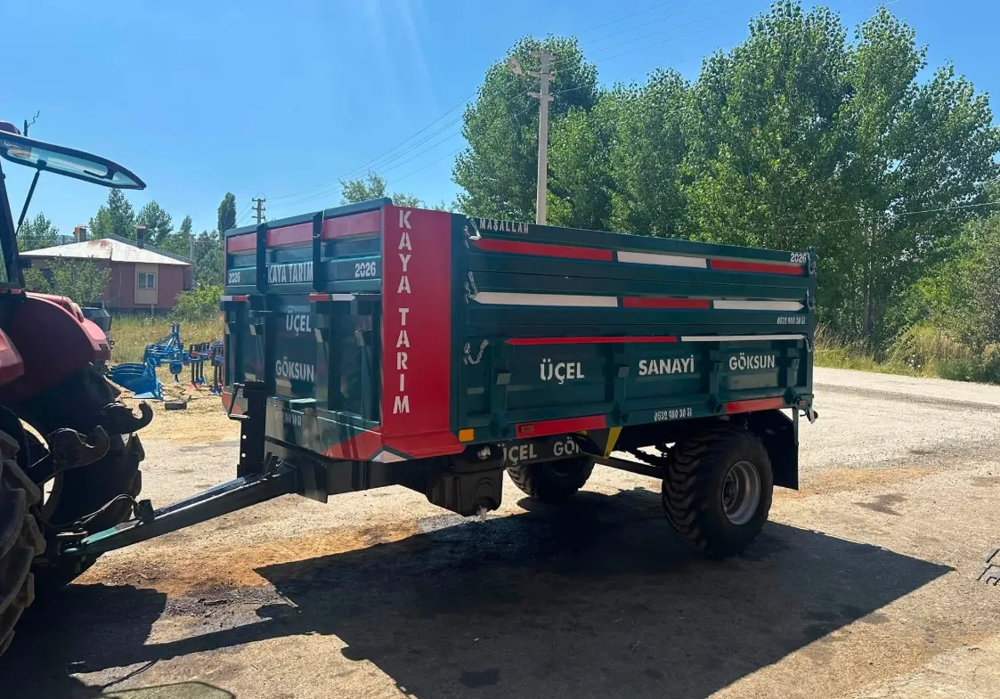
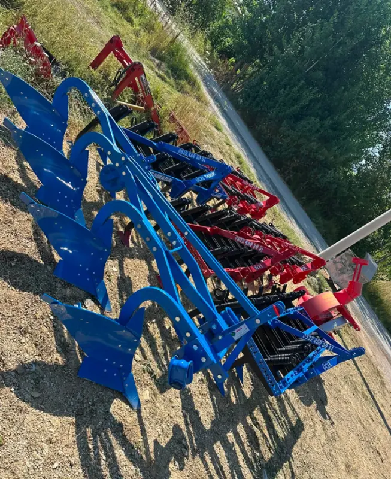
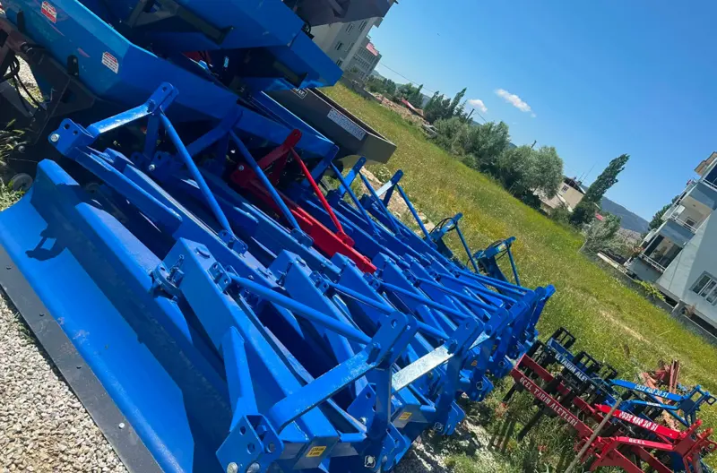

5 fotoğraf
5 fotoğrafRömorklar
Tarım Römorku
Renk size özel · Kasa yazısı size özel
Üçel Tarım Aletleri · Göksun / Kahramanmaraş
Göksun'da tarımın ihtiyacına göre römork ve tarım ekipmanları. Rengini, yazısını birlikte seçelim.


Hangi iş için arıyorsunuz?
5 fotoğrafRömorklar
Renk size özel · Kasa yazısı size özel
Su Tankerleri
Traktörle çekilir · Çeki oklu şasi
6 fotoğrafÖn Yükleyiciler
Hidrolik · Farklı marka traktörlere
Toprak İşleme
Yaylı ayaklar · Kırmızı · Mavi

Toprak İşleme
Toprağı devirerek sürer

Toprak İşleme
Geniş bıçak · Traktör arkasına takılır
 2 fotoğraf
2 fotoğrafDiğer Ekipmanlar
Tekerlekli şasi · Döner kollar

Diğer Ekipmanlar
Traktörle kullanılır
Müşterilerimize teslim ettiğimiz ürünler, kendi traktörlerinin yanında.


Ne taşıyacağınızı, traktörünüzü ve arazinizi yazın.
Ölçü, renk ve yazıyı sizinle konuşarak netleştiriyoruz.
Her şey açık olduktan sonra siparişe geçiyoruz.
Ürün, ölçü, fiyat… Telefonla ya da WhatsApp'tan doğrudan bize ulaşın.
0532 480 30 51